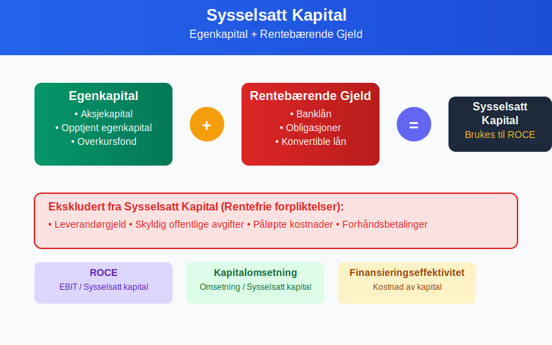
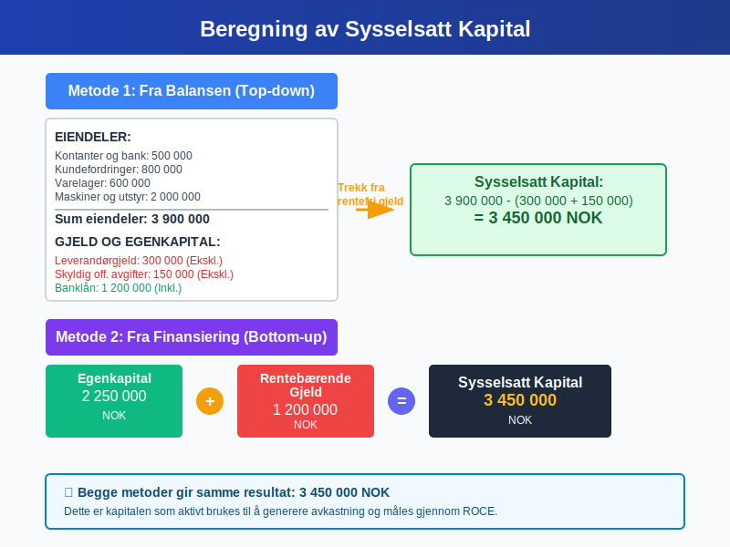
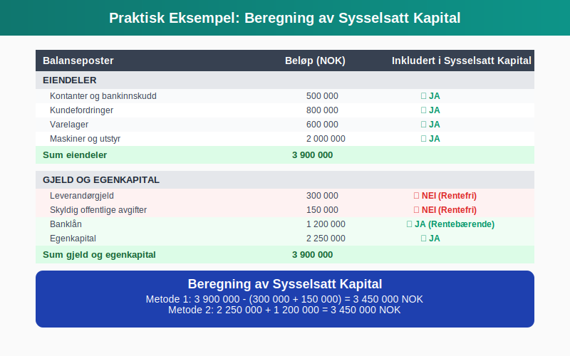
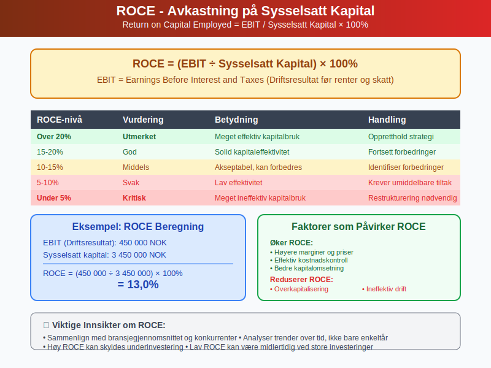
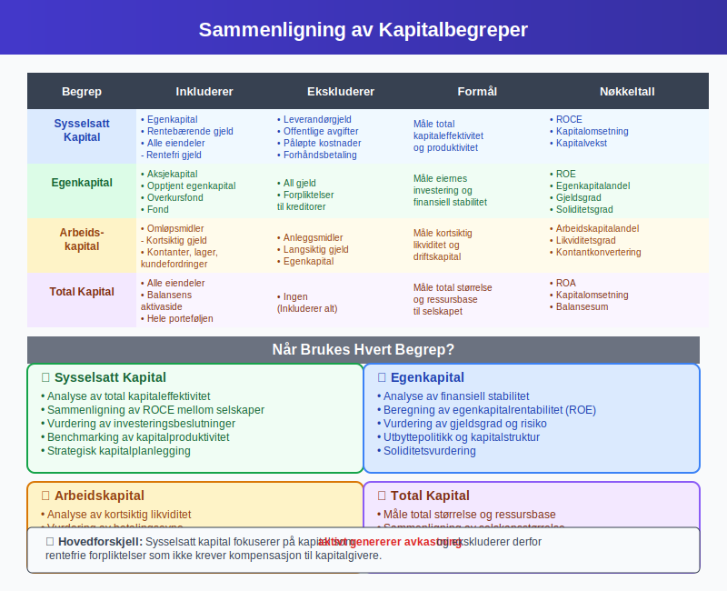
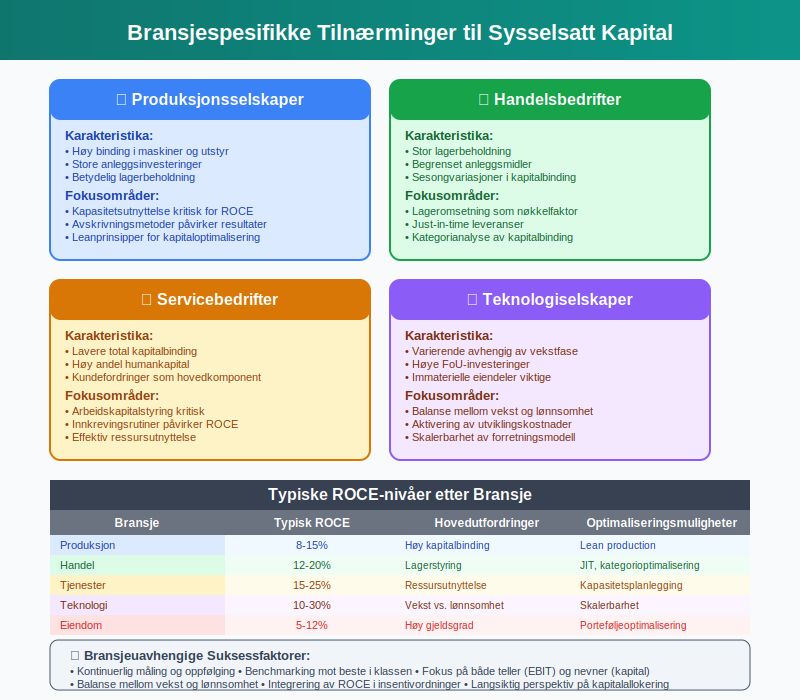
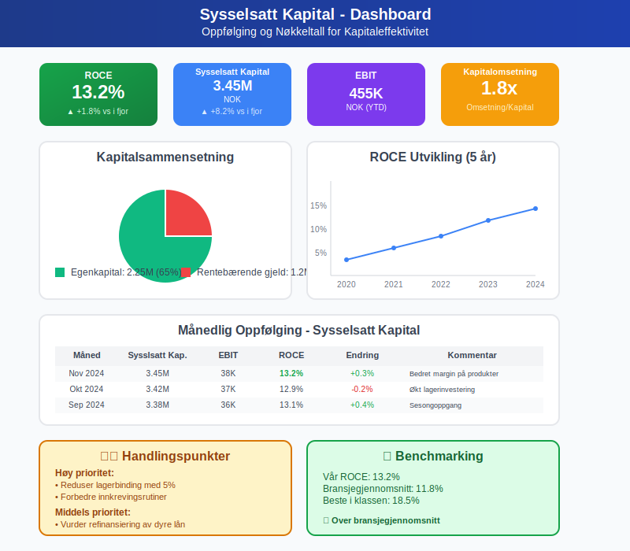
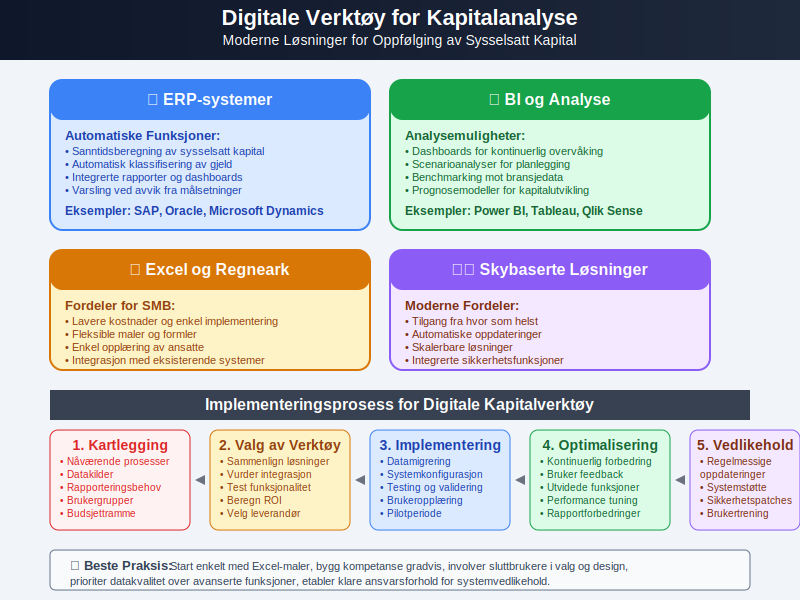
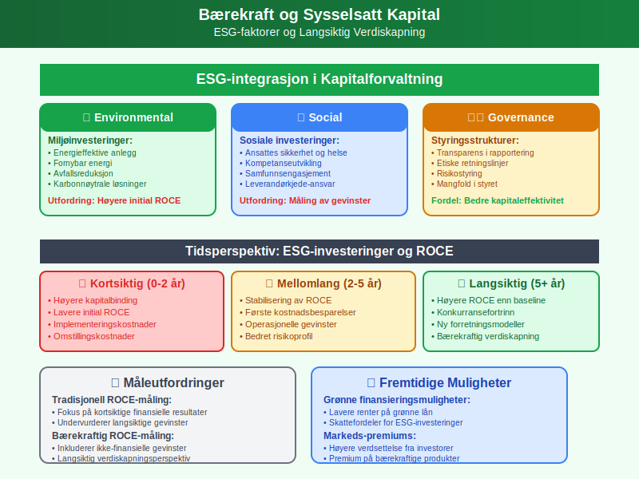
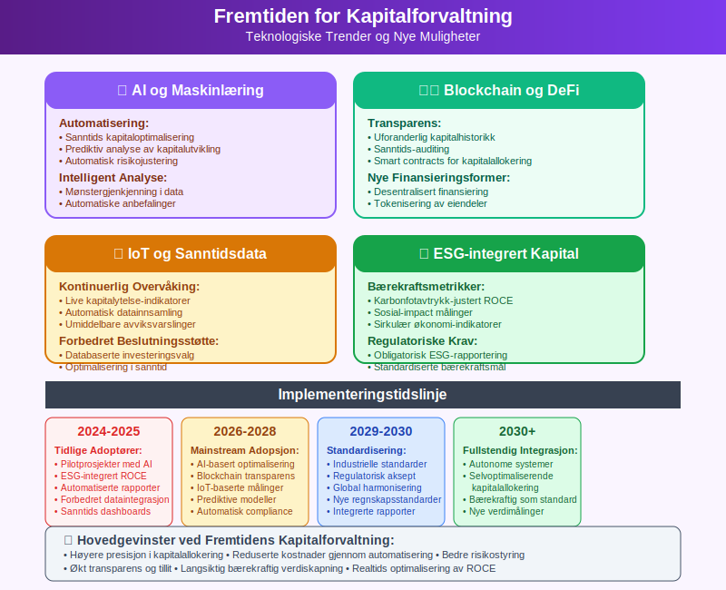

Sysselsatt kapital er den totale kapitalen som en bedrift aktivt bruker i sin virksomhet for å generere inntekter og overskudd. Dette omfatter både egenkapital og fremmedkapital som aktivt benyttes i driften. Sysselsatt kapital er et sentralt begrep i finansiell analyse og brukes til å måle hvor effektivt et selskap bruker sine totale ressurser til å skape verdier.

Definisjon og Grunnleggende Forståelse
Sysselsatt kapital kan defineres på flere måter, avhengig av perspektiv og analysemetode:
Balanseperspektiv
Sysselsatt kapital = Totale eiendeler - Rentefrie gjeld
Dette inkluderer:
- Egenkapital
- Rentebærende gjeld (banklån, obligasjoner, etc.)
- Ekskluderer rentefrie forpliktelser som leverandørgjeld
Finansieringsperspektiv
Sysselsatt kapital = Egenkapital + Rentebærende gjeld
Dette perspektivet fokuserer på kapitalkildene som krever avkastning.

Komponenter av Sysselsatt Kapital
1. Egenkapital
Egenkapital representerer eiernes investering og er en hovedkomponent:
- Aksjekapital
- Opptjent egenkapital
- Overkursfond
- Andre egenkapitalposter
2. Rentebærende Gjeld
Gjeld som krever rentebetalinger:
- Banklån (kortsiktige og langsiktige)
- Obligasjoner
- Konvertible lån
- Leasingforpliktelser (IFRS 16)
3. Eksluderte Poster
Rentefrie forpliktelser som ikke regnes som sysselsatt kapital:
- Leverandørgjeld
- Skyldig offentlige avgifter
- Påløpte kostnader
- Forhåndsbetalinger fra kunder
Beregning av Sysselsatt Kapital
Metode 1: Fra Balansen (Top-down)
| Balanseposter | Beløp (NOK) | Inkludert |
|---|---|---|
| EIENDELER | ||
| Kontanter og bankinnskudd | 500 000 | ✓ |
| Kundefordringer | 800 000 | ✓ |
| Varelager | 600 000 | ✓ |
| Maskiner og utstyr | 2 000 000 | ✓ |
| Sum eiendeler | 3 900 000 | |
| GJELD OG EGENKAPITAL | ||
| Leverandørgjeld | 300 000 | ✗ (Rentefri) |
| Skyldig offentlige avgifter | 150 000 | ✗ (Rentefri) |
| Banklån | 1 200 000 | ✓ |
| Egenkapital | 2 250 000 | ✓ |
| Sum gjeld og egenkapital | 3 900 000 |
Sysselsatt kapital = 3 900 000 - (300 000 + 150 000) = 3 450 000 NOK
Metode 2: Fra Finansiering (Bottom-up)
Sysselsatt kapital = Egenkapital + Rentebærende gjeld = 2 250 000 + 1 200 000 = 3 450 000 NOK

Nøkkeltall Basert på Sysselsatt Kapital
1. Avkastning på Sysselsatt Kapital (ROCE)
ROCE = (EBIT / Sysselsatt kapital) × 100%
Hvor EBIT = Earnings Before Interest and Taxes (Driftsresultat før renter og skatt)
2. Kapitalomsetning
Kapitalomsetning = Omsetning / Sysselsatt kapital
Måler hvor effektivt kapitalen brukes til å generere salg.
3. Kapitalvekst
Kapitalvekst = (Sysselsatt kapital år 2 - Sysselsatt kapital år 1) / Sysselsatt kapital år 1 × 100%
Betydning for Finansiell Analyse
Effektivitetsmåling
Sysselsatt kapital brukes til å vurdere:
- Kapitaleffektivitet - hvor godt selskapet bruker sine ressurser
- Investeringsavkastning - om kapitalen genererer tilfredsstillende avkastning
- Sammenligning mellom selskaper i samme bransje
ROCE som Nøkkeltall
| ROCE-nivå | Vurdering | Betydning |
|---|---|---|
| Over 20% | Utmerket | Meget effektiv kapitalbruk |
| 15-20% | God | Solid kapitaleffektivitet |
| 10-15% | Middels | Akseptabel, men kan forbedres |
| 5-10% | Svak | Lav effektivitet, krever tiltak |
| Under 5% | Kritisk | Meget ineffektiv kapitalbruk |

Sysselsatt Kapital vs. Andre Kapitalbegreper
Sammenligning med Relaterte Begreper
| Begrep | Inkluderer | Ekskluderer | Formål |
|---|---|---|---|
| Sysselsatt kapital | Egenkapital + Rentebærende gjeld | Rentefri gjeld | Måle total kapitaleffektivitet |
| Egenkapital | Kun eiernes kapital | All gjeld | Måle eierenes investering |
| Arbeidskapital | Omløpsmidler - Kortsiktig gjeld | Anleggsmidler | Måle kortsiktig likviditet |
| Total kapital | Alle eiendeler | Ingen | Måle total størrelse |
Når Brukes Hvert Begrep?
Sysselsatt kapital:
- Analyse av total kapitaleffektivitet
- Sammenligning av ROCE mellom selskaper
- Vurdering av investeringsbeslutninger
- Analyse av finansiell stabilitet
- Beregning av egenkapitalrentabilitet (ROE)
- Vurdering av gjeldsgrad

Optimalisering av Sysselsatt Kapital
Strategier for Forbedring
1. Øke Inntektene
- Prisoptimalisering på produkter og tjenester
- Markedsutvidelse til nye segmenter
- Produktutvikling for høyere marginer
2. Redusere Kapitalbinding
- Lageroptimalisering - redusere unødvendig lagerbinding
- Bedre kundefordringer-styring - raskere innkreving
- Effektiv kontantstrømstyring
3. Kapitalstrukturoptimalisering
- Balansere mellom egenkapital og gjeld
- Refinansiering til lavere renter
- Utbyttepolitikk som støtter optimal kapitalstruktur
Bransjespesifikke Hensyn
Produksjonsselskaper:
- Høy binding i maskiner og utstyr
- Fokus på kapasitetsutnyttelse
- Avskrivninger påvirker ROCE
Handelsbedrifter:
- Stor lagerbeholdning
- Fokus på lageromsetning
- Sesongvariasjoner i kapitalbinding
Servicebedrifter:
- Lavere kapitalbinding
- Høyere fokus på arbeidskapital
- Kundefordringer som hovedkomponent

Sysselsatt Kapital i Ulike Regnskapsstandarder
Norske Regnskapsstandarder
- Enklere tilnærming for små og mellomstore bedrifter
- Fokus på praktisk anvendelse
- Mindre detaljert klassifisering
IFRS (International Financial Reporting Standards)
- Mer detaljerte krav til klassifisering
- Spesifikke regler for finansielle instrumenter
- Kompleks behandling av leasingavtaler (IFRS 16)
US GAAP
- Amerikanske standarder
- Noe ulike prinsipper enn IFRS
- Relevant for internasjonale konsern
Måling og Oppfølging
Månedlig Oppfølging
- Oppdaterte balancetall
- Trendanalyse av kapitalutvikling
- Sammenligning med budsjett og foregående år
Kvartalsrapportering
- Detaljert ROCE-analyse
- Segmentrapportering av kapitalbruk
- Kommentarer til vesentlige endringer
Årlig Strategigjennomgang
- Langsiktig kapitalplanlegging
- Benchmarking mot konkurrenter
- Vurdering av kapitalallokering

Utfordringer og Fallgruver
Vanlige Feil i Beregninger
- Inkludere rentefri gjeld som sysselsatt kapital
- Glemme leasingforpliktelser (særlig etter IFRS 16)
- Ikke justere for uvanlige poster i EBIT-beregningen
- Bruke punkt-i-tid i stedet for gjennomsnittlig kapital
Begrensninger ved ROCE
- Påvirkes av regnskapsprinsipper og avskrivningsmetoder
- Kan manipuleres gjennom timing av investeringer
- Ikke hensyn til risiko og markedsforhold
- Kortsiktig fokus kan skade langsiktig verdiskapning
Tolkningsutfordringer
Høy ROCE kan skyldes:
- Utmerket drift og kapitaleffektivitet ✓
- Underinvestering i fremtidig vekst ✗
- Engangsgevinster eller uvanlige poster ✗
Lav ROCE kan skyldes:
- Ineffektiv kapitalbruk ✗
- Store investeringer som ikke har gitt avkastning ennå ✓
- Midlertidige markedsutfordringer ✓
Digitale Verktøy og Automatisering
Moderne ERP-systemer
Moderne ERP-systemer kan automatisere:
- Sanntidsberegning av sysselsatt kapital
- Automatisk klassifisering av rentebærende vs. rentefri gjeld
- Rapportering og trendanalyse
- Varsling ved avvik fra målsetninger
Excel og BI-verktøy
- Dashboards for kontinuerlig overvåking
- Scenarioanalyser for planlegging
- Benchmarking mot bransjedata
- Prognosemodeller for fremtidig kapitalutvikling

Strategisk Kapitalplanlegging
Langsiktig Perspektiv
5-års kapitalplan bør inkludere:
- Investeringsbehov i nye eiendeler
- Finansieringsstrategi for vekst
- Målsetninger for ROCE-utvikling
- Scenario-planlegging for ulike markedsforhold
Kapitalallokering
Prinsipper for optimal allokering:
- Prioritere prosjekter med høyest ROCE
- Balansere kortsiktig og langsiktig verdiskapning
- Vurdere risiko i alle investeringsbeslutninger
- Opprettholde finansiell fleksibilitet
Integrering med Budsjettering
Sysselsatt kapital bør integreres i:
- Budsjetteringsprosessen
- Rullende prognoser
- Strategisk planlegging
- Investeringsvurderinger
Sysselsatt Kapital og Bærekraft
ESG-faktorer (Environmental, Social, Governance)
Moderne kapitalanalyse må ta hensyn til:
- Miljøinvesteringer som påvirker kapitalbinding
- Sosiale investering som kan redusere kortsiktig ROCE
- Styringsstrukturer som påvirker kapitaleffektivitet
Langsiktig Verdiskapning
- Bærekraftige investeringer kan ha lavere initial ROCE
- Fremtidige regulatoriske krav kan kreve kapitaltilpasninger
- Samfunnsansvar må balanseres med kapitaleffektivitet

Internasjonale Aspekter
Flernasjonale Konsern
Særlige hensyn for internasjonale selskaper:
- Valutarisiko påvirker kapitalberegninger
- Ulike regnskapsstandarder i forskjellige land
- Transfer pricing påvirker intern kapitalallokering
- Politisk risiko må inkluderes i kapitalvurderinger
Sammenligning på Tvers av Land
- Justering for ulike regnskapsprinsipper
- Hensyn til makroøkonomiske forskjeller
- Normalisering for valutasvingninger
- Strukturelle forskjeller mellom markeder
Fremtidige Trender
Teknologisk Utvikling
- Kunstig intelligens for kapitaloptimalisering
- Maskinlæring for prediksjon av kapitalutvikling
- Automatisering av kapitalrapportering
- Sanntidsanalyse av kapitaleffektivitet
Regulatoriske Endringer
- Nye regnskapsstandarder som påvirker kapitalberegninger
- Bærekraftsrapportering som krever kapitalomklassifiseringer
- Skatteendringer som påvirker kapitalstruktur
- Internasjonale harmonisering av standarder
Markedsutvikling
- Lavere renter endrer kostnad av kapital
- Økt volatilitet krever mer fleksibel kapitalplanlegging
- Nye finansieringsformer som påvirker kapitalstruktur
- Digitalisering reduserer kapitalbehov i mange bransjer

Praktiske Råd og Beste Praksis
For Små og Mellomstore Bedrifter
- Start enkelt - fokuser på hovedkomponentene
- Månedlig oppfølging av nøkkeltall
- Benchmark mot bransjestandarder
- Involver regnskapsfører i analysen
For Større Selskaper
- Automatiser beregninger gjennom ERP-systemer
- Segmentanalyse for bedre innsikt
- Integrér med strategisk planlegging
- Rapportér regelmessig til styre og investorer
For Investorer og Analytikere
- Sammenlign med bransjegjennomsnitt
- Se på trender over flere år
- Analyser bak tallene - hva driver endringene?
- Vurder kvalitet på underliggende eiendeler
Relaterte Begreper og Konsepter
For å forstå sysselsatt kapital fullt ut, bør du også sette deg inn i:
- Egenkapital - Eiernes del av kapitalen
- Arbeidskapital - Kortsiktig kapital til drift
- Kapital - Grunnleggende kapitalbegreper
- Fremmedkapital - Lånt kapital
- Avkastning - Måling av kapitalens produktivitet
- Rentabilitet - Lønnsomhetsmåling
- ERP-system - Verktøy for kapitaloppfølging
- Budsjettering - Planlegging av kapitalbruk
Sysselsatt kapital er et sentralt begrep for alle som ønsker å forstå og optimalisere kapitalbruken i en bedrift. Ved å måle og følge opp sysselsatt kapital systematisk, kan bedrifter forbedre sin lønnsomhet og skape mer verdi for eierne.